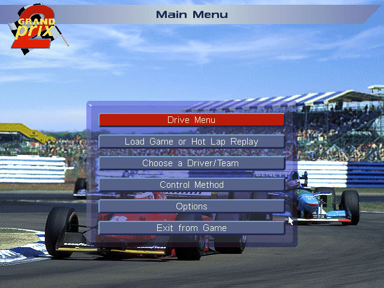
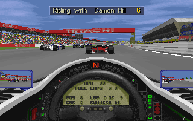

名稱：大獎賽2／格蘭披治賽車2／世界巡迴車賽2／世紀金冠軍2 (Grand Prix 2，英文版)
簡介：MicroProse 1996年出品的賽車遊戲。同年Instant Access推出該遊戲非官方的增益集
「完美大獎賽（Perfect Grand Prix）」資料片，提供了16個增益程式 [待補]。


備註：本版為1.0B
保護：光碟，破解碼（放入光碟才有背景音樂和動畫）：
GP2.EXE
74 05 E8 33 04
90 90 -- -- --
E8 9F 87 01 00 0F 82 B9 00 00 00 BA 4D
90 90 90 90 90 90 90 90 90 90 90 -- --
72 0B 8B D8 B4
90 90 -- -- --
74 28 A0 00 19
90 90 -- -- --
75 06 66 83 F8 00 75 0F
90 90 -- -- -- -- EB --
E8 9B FE FF FF 8B 0D
90 90 90 90 90 -- --
E8 4A 00 00 00 80 3D
90 90 90 90 90 -- --
75 0B 83 C6 04
90 90 -- -- --
75 9D C6 05 02
90 90 -- -- --
需拷貝光碟GP2目錄底下的BITMAPS、CIRCUITS、GAMEJAMS目錄到安裝目錄。
備註：「完美大獎賽」增益集資料片只能在Windows安裝，需提供原版遊戲所在的安裝路徑。
操作：
,. = 轉向
A = 加速
Z = 剎車
Space/Shift = 換檔